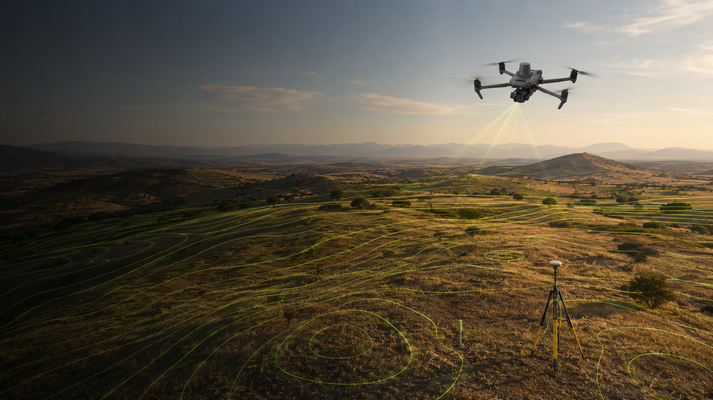
Quiénes somos
Somos una empresa de mapeo aéreo consolidada. Usamos tecnología de precisión para llevar tu proyecto del análisis al desarrollo — de principio a fin.
RTK
Precisión de 1–2 cm horizontal/vertical con dron y estación GNSS base.
BIM
Modelos Revit, AutoCAD y Civil 3D desde el vuelo hasta el expediente técnico.
Agente IA
Captación y atención de clientes 24/7 para tu desarrollo inmobiliario.
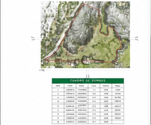
Servicio
El plano que firma tu perito, con coordenadas UTM bajo marco ITRF08.
UTM
Coordenadas georreferenciadas, marco ITRF08.
Marcación
Vértices materializados en campo con varilla y aerosol.
Trazo perimetral
Polígono cerrado con rumbos y distancias.
Qué recibes
Entrega típica · 48–72 h en proyectos estándar
Plano de deslinde
Cuadro de rumbos
Cada vértice del polígono incluye:
· Coordenada UTM Norte/Este
· Rumbo y distancia al siguiente vértice
· Superficie total calculada en m²
· Sistema de referencia ITRF08, época 2010.0
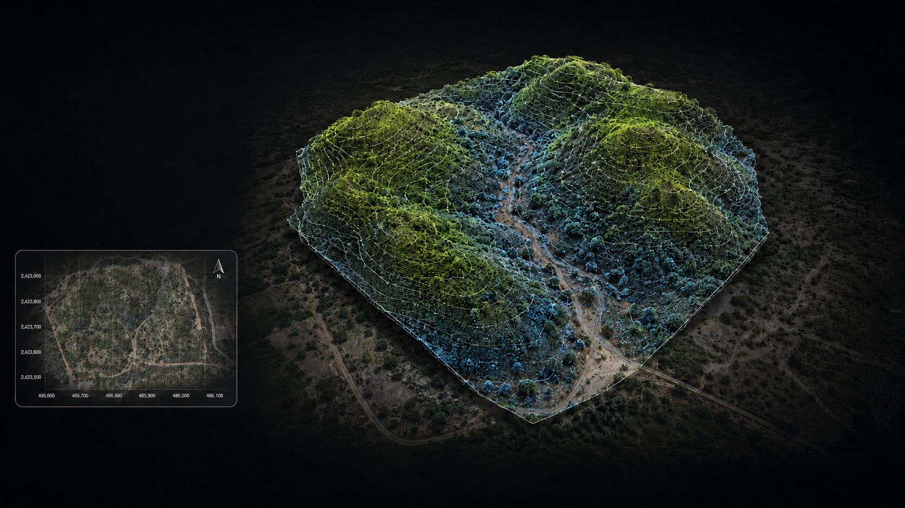
Servicio
1–2 cm de precisión H/V con dron RTK + estación GNSS.
Ortomosaico
Imagen aérea georeferenciada de alta resolución (GeoTIFF).
Nube de puntos
Modelo denso LAS/LAZ con densidad de 100–500 pts/m².
Curvas de nivel
Isolíneas cada 25 cm o 50 cm, exportables a DXF/SHP.
DSM / Cortes
Modelo de superficie digital y perfiles de corte para cubicación.
Qué recibes
Entrega típica · 48–72 h en proyectos estándar
Nube de puntos interactiva · 17.2 M pts
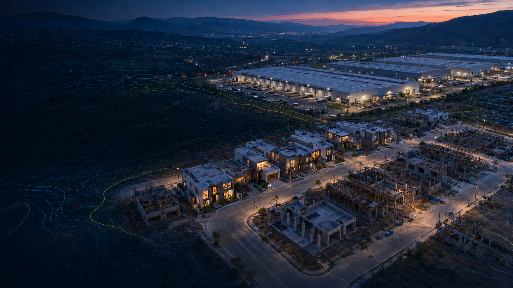
Servicio
Mostramos tu propiedad como merece: video cinematográfico, recorrido virtual y sitio web — todo listo para vender.
Video aéreo
Filmación con Mavic 3 Classic 5.1K · edición · motion graphics.
Landing
Sitio web inmobiliario con ficha técnica, galería y formulario de contacto.
Recorrido 360°
Foto esferas interactivas que el comprador explora desde su celular.
Agente IA
Atención y calificación de leads asistida, conectada a tu CRM.
Qué recibes
Entrega según el alcance del material
Recorrido virtual 360° · ejemplo real
Arrástralo para mirar en cualquier dirección · pantalla completa disponible.
Otras formas en que presentamos tu propiedad
Video inmobiliario
Le damos a tu propiedad una pieza para redes que la gente ve completa y comparte. Mira el alcance por ti mismo.
Caso real · terreno de 5 ha en Tulancingo
Ver en TikTok ↗Página web para tu propiedad
Una página propia para tu propiedad. Compartes un link y el comprador ve fotos, ubicación y precio, y te contacta desde ahí.
Caso real · Fraccampestre, preventa en Agua Blanca
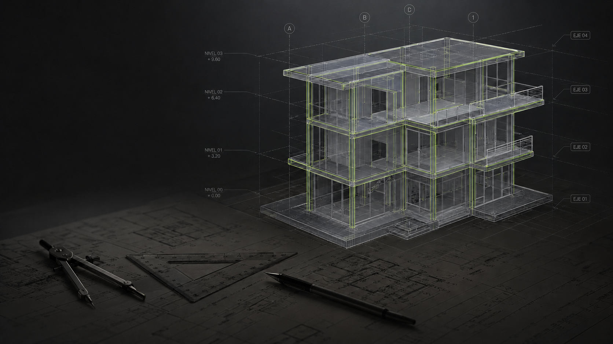
Servicio
Todo bajo metodología BIM.
Scan-to-BIM
Del vuelo fotogramétrico al modelo digital de edificación o terreno.
Revit / AutoCAD
Entregables compatibles con flujos de diseño arquitectónico.
Civil 3D
Superficies, alineamientos, perfiles y volumetrías de obra civil.
IFC
Formato abierto para interoperabilidad con cualquier plataforma BIM.
Qué recibes
Entrega según el alcance del modelo
Modelo BIM navegable
Modelo BIM navegable de la Cabaña San Pedro (proyecto Topo Tello / Samuel).
Esperando export del Revit a glTF · próximamente embebido aquí.
Diferenciadores
Entrega rápida
Resultados en 48–72 h para proyectos estándar.
Precisión RTK
1–2 cm horizontal/vertical. Comparable a estación total.
BIM nativo
Del vuelo al modelo, sin re-dibujar ni perder precisión.
Agente IA
Captación y seguimiento de clientes 24/7 para inmobiliarias, conectado a tu CRM.
Terrenos difíciles
Laderas, barrancas y áreas remotas sin problema de acceso.
Trato directo
Hablas con quien vuela y entrega. Sin intermediarios.
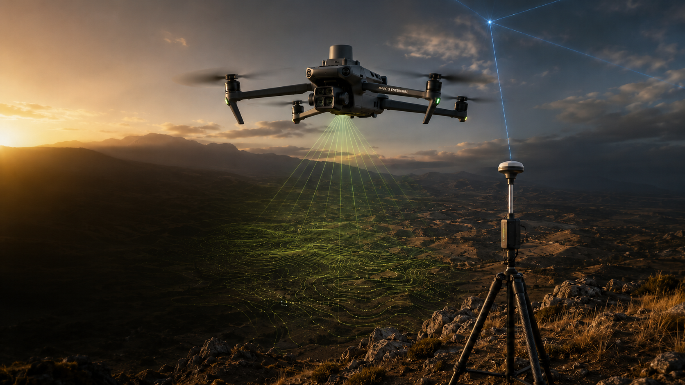
Hablemos
+100 proyectos · 5 años de operación
Gracias por tomarte el tiempo de ver nuestra presentación. Nos encantaría llevar tu próximo proyecto al aire.
Han confiado en nosotros
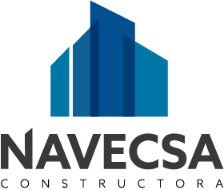
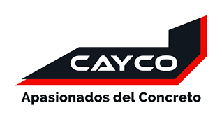
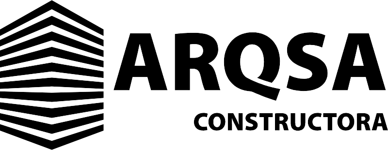
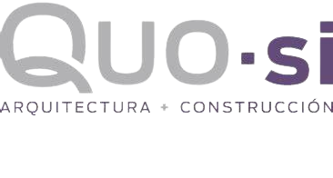
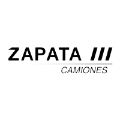
Topografía aérea · Arquitectura · Promoción inmobiliaria